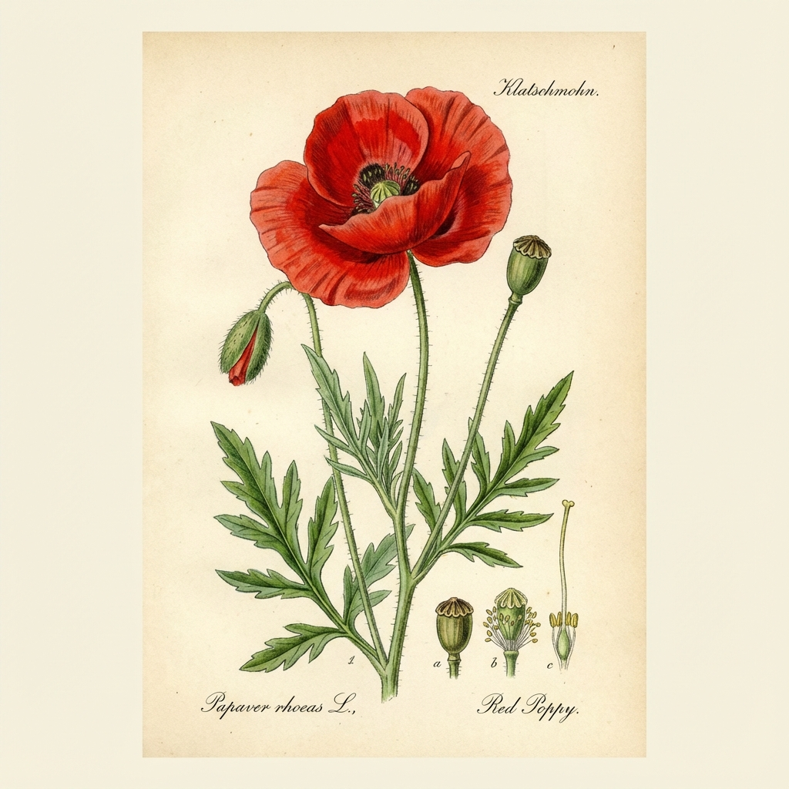

1. Klatschmohn (Klaproos / Coquelicot)
Papaver rhoeas
🗣️ Lokale Namen: Kollebloem, Kankerbloem
🔍 Erkennung
- Große, knallrote Blüten mit schwarzem Grund
- Dünner, behaarter Stängel
- Wächst auf Feldern, Schuttplätzen und gestörten Böden
- Symbol von "Flanders Fields" (1. Weltkrieg)
📍 Fundorte in Belgien
Überall auf den Äckern Flanderns und Westflanderns. Pionierpflanze auf frisch aufgewühlter Erde.
📅 Sammelzeit
Blütenblätter: Mai - Juli
Samen: Juli - August
💊 Heilwirkung
- Beruhigend - Blütenblätter enthalten Anthocyane und Alkaloide
- Hustenstillend - Traditioneller Sirup ("Coquelicot-Sirup")
- Schlaffördernd - Mildes Schlafmittel für Kinder (nur Blüten!)
📋 Anwendung
Tee: Getrocknete rote Blüten (verlieren Farbe beim Trocknen, werden lila) gegen Unruhe.
Sirup: Blütenblätter mit Zucker einkochen gegen Reizhusten.
Samen: Als Mohn auf Brötchen (keine betäubende Wirkung).
⚠️ Achtung: Nur die roten Blütenblätter verwenden! Die grünen Kapseln sind
schwach giftig. Nicht mit Schlafmohn verwechseln.